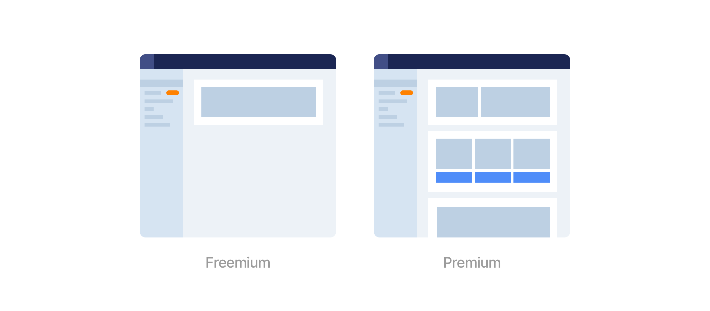
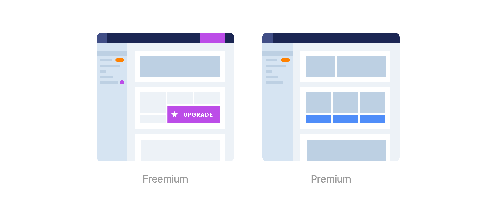
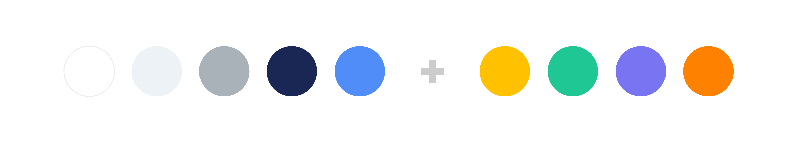

⟵
Similarweb, 2019
Freemium vs. Premium
In this project I created a scalable solution for optimizing Similarweb’s Freemium product.
Background
In addition to its Premium product, Similarweb also offers a free version with limited capabilities we call “Freemium”. It was created to expose potential users to SimilarWeb’s benefits and convince them to purchase the Premium version.
As new features were added to Premium, the Freemium experience remained somewhat neglected. There was no single product owner overseeing its development and no clear methodology for determining which new features to include in it and which to remove. 
Problem + Goal
When I joined the Growth team, Freemium’s conversion rate was pretty low. As we started looking at it holistically, we realized that the discoverability of core features is very inconsistent. There were many missed growth opportunities throughout the product. The project’s goal was to find scalable ways to increase Freemium’s conversion rate.
Hypothesis
By converting valuable Premium features into lean “teasers”, and including “Upgrade” hooks in strategic points in the product, we could improve the conversion from Freemium to Premium. 
Research
We started by meeting with stakeholders from different teams to better understand each feature and its audience. We soon discovered that since Similarweb has such a diverse user base, every feature can be narrowed down in multiple ways, each would appeal to a different audience.
For example, one of the product’s core features is a chart that compares competing websites by traffic volume, country, search words etc. In Freemium, the chart could be limited in multiple ways:
Use case 1
Lock the number of competitors for Freemium users, and encourage them to upgrade to see more.
Might appeal to: Investors who require a wider comparison to make an informed investment.
Might not appeal to: Marketing managers who need to compare their product’s performance between 2 distribution websites.
Use case 2
Lock the number of categories for Freemium users, and encourage them to upgrade to add more.
Might appeal to: Marketing managers who need to get a complete overview of a website's or app's performance across all relevant categories.
Might not appeal to: Researches looking to focus on a specific category.
Use case 3
Lock the capability to download the raw data as a spreadsheet.
Might appeal to: Analysts who need to feed the raw data into their own prediction models.
Might not appeal to: Users who are satisfied with Similarweb’s default data visualizations.
Meeting with stakeholders has taught us that the strategy we choose for limiting each feature would determine the audience we attract. We also learned that most stakeholders perceived Freemium as their playground for testing what strategy works best for their feature.
While this agile approach was essential for some stakeholders, it made it hard to promote Freemium as a consistent experience, and achieve a scalable growth lift.
Scope
With that in mind we decided to redefine the scope of the project and turn Freemium into a scalable and efficient testing lab.
We defined the following tasks:
Mapping and Clustering
In order to identify growth opportunities horizontally, I mapped out the features in the product and clustered them into groups by overlapping components (tables/modals/actions etc..).
Locks
Eventually I extracted 3 generic strategies in which a feature can be locked:
- Limited data - A chart that provides only a limited number of categories.
- Limited action - An action within a chart that is limited by number of uses or is completely blocked.
- Blocked feature - An entire feature that is blocked by an upgrade hook.
Upgrade CTA’s
I started thinking of ways to pair each strategy with an appropriate upgrade CTA, taking into account the product’s existing layouts.
I also looked at other Freemium/Premium models, and identified 2 common patterns:
- There is always a visible indication that the user is using a free version of the product, which is accompanied by a clear CTA to upgrade.
- There's a consistent use of color and/or icon to communicate upgrading.
I defined 3 upgrade components that could be applied on every feature, depending on the use-case:
Main upgrade hook
A clear CTA in the header that is accessible from most screens. Let's the user upgrade whenever they want.
Banner
An upgrade banner that appears in the bottom of limited charts.
Tooltip
For cases where there is limited space, hovering a locked functionality opens a tooltip with more information about upgrading.
Visual exploration
One of the takeaways from the competitive analysis I did made me consider a color that would represent all upgrade communications in Freemium.
Having worked on the product’s color system before, it was easy for me to explore color options for the upgrade functionality, that don’t bear another meaning within the product. I brainstormed with the team and we all agreed that purple could be a fresh touch and a good fit to indicate “upgrade to premium” to our users.
Final Design and Implementation
Creating a scalable system of flexible componenets for optimizing the freemium experience was a crucial step in optimizing the overall conversion rate from freemium to paying users. Now that we have a strong foundation, the team can test different solutions and iterate often.